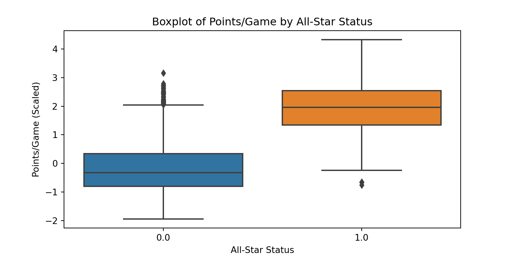
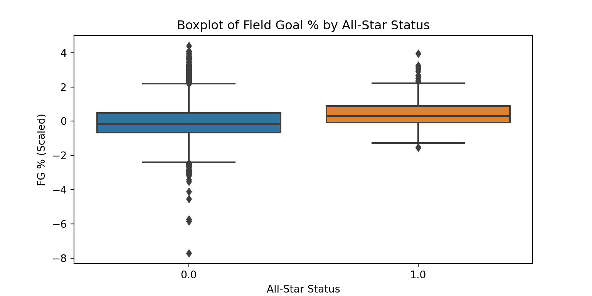
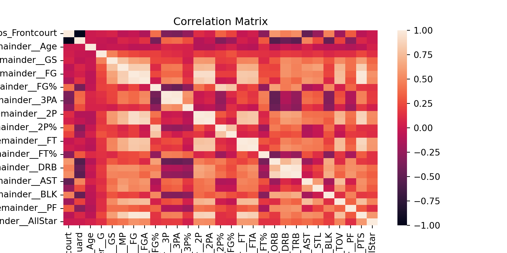

NBA All-Star Predictions
2022-12-20
1 NBA All-Star Predictions
1.1 Introduction
Objective
Utilize an Extreme Gradient Boosting model, hereafter referred to as “XGBoost”, to predict the NBA All-Star roster for the 2022-23 season.
Background
Each season in February, 24 of the NBA’s top performing players are selected as All-Stars. 12 players represent each of the East and West Conferences with the following breakdown:
- Four guards (Point Guard, Shooting Guard)
- Six frontcourt players (Small Forward, Power Forward, Center)
- Two additional players, regardless of position
Starting lineups are selected by a combination of fan, current player, and media votes, while the reserve players are chosen by the league’s 30 head coaches. Injured players will be replaced by a player selected by the league’s Commissioner, Adam Silver.
Data
The model will be built off of players’ “per game” statistics from the 2003-04 to 2021-22 seasons, accessed from the public sports database Basketball-Reference. Player statistics from the current season, which is only ~30 games in at the time of writing, will be used as our test dataset. I aim to update my predictions in January and again in February just before the rosters are announced, allowing me to assess my models predictive power in real-time. While the model will not change during this period, new data will be available as players continue to complete more games in the coming months.
1.2 Methodology/Data Prep
I will utilize a combination of common and advanced Python libraries to complete the project. The following code is living and may be adapted as the project continues.
import pandas as pd
import numpy as np
import matplotlib.pyplot as plt
import time
import sklearn
import seaborn as sns
import xgboost as xgb
from scipy.stats import zscore
from sklearn.preprocessing import OneHotEncoder, LabelEncoder
from sklearn.compose import make_column_transformer
from sklearn.model_selection import GridSearchCV, KFold, RepeatedStratifiedKFold, train_test_split, cross_val_score, RandomizedSearchCV
from sklearn.metrics import roc_curve, auc, roc_auc_score, RocCurveDisplay, plot_confusion_matrix
from sklearn.calibration import calibration_curveNow we will read in our 19 seasons of player per game statistics to build our training set on.
s03 = pd.read_csv('C:/Users/ericd/OneDrive - North Carolina State University/Desktop/NBA-AllStar-Predictions/Data/season03-04.csv')
s04 = pd.read_csv('C:/Users/ericd/OneDrive - North Carolina State University/Desktop/NBA-AllStar-Predictions/Data/season04-05.csv')
s05 = pd.read_csv('C:/Users/ericd/OneDrive - North Carolina State University/Desktop/NBA-AllStar-Predictions/Data/season05-06.csv')
s06 = pd.read_csv('C:/Users/ericd/OneDrive - North Carolina State University/Desktop/NBA-AllStar-Predictions/Data/season06-07.csv')
s07 = pd.read_csv('C:/Users/ericd/OneDrive - North Carolina State University/Desktop/NBA-AllStar-Predictions/Data/season07-08.csv')
s08 = pd.read_csv('C:/Users/ericd/OneDrive - North Carolina State University/Desktop/NBA-AllStar-Predictions/Data/season08-09.csv')
s09 = pd.read_csv('C:/Users/ericd/OneDrive - North Carolina State University/Desktop/NBA-AllStar-Predictions/Data/season09-10.csv')
s10 = pd.read_csv('C:/Users/ericd/OneDrive - North Carolina State University/Desktop/NBA-AllStar-Predictions/Data/season10-11.csv')
s11 = pd.read_csv('C:/Users/ericd/OneDrive - North Carolina State University/Desktop/NBA-AllStar-Predictions/Data/season11-12.csv')
s12 = pd.read_csv('C:/Users/ericd/OneDrive - North Carolina State University/Desktop/NBA-AllStar-Predictions/Data/season12-13.csv')
s13 = pd.read_csv('C:/Users/ericd/OneDrive - North Carolina State University/Desktop/NBA-AllStar-Predictions/Data/season13-14.csv')
s14 = pd.read_csv('C:/Users/ericd/OneDrive - North Carolina State University/Desktop/NBA-AllStar-Predictions/Data/season14-15.csv')
s15 = pd.read_csv('C:/Users/ericd/OneDrive - North Carolina State University/Desktop/NBA-AllStar-Predictions/Data/season15-16.csv')
s16 = pd.read_csv('C:/Users/ericd/OneDrive - North Carolina State University/Desktop/NBA-AllStar-Predictions/Data/season16-17.csv')
s17 = pd.read_csv('C:/Users/ericd/OneDrive - North Carolina State University/Desktop/NBA-AllStar-Predictions/Data/season17-18.csv')
s18 = pd.read_csv('C:/Users/ericd/OneDrive - North Carolina State University/Desktop/NBA-AllStar-Predictions/Data/season18-19.csv')
s19 = pd.read_csv('C:/Users/ericd/OneDrive - North Carolina State University/Desktop/NBA-AllStar-Predictions/Data/season19-20.csv')
s20 = pd.read_csv('C:/Users/ericd/OneDrive - North Carolina State University/Desktop/NBA-AllStar-Predictions/Data/season20-21.csv')
s21 = pd.read_csv('C:/Users/ericd/OneDrive - North Carolina State University/Desktop/NBA-AllStar-Predictions/Data/season21-22.csv')A handful of things that needed to be done to the datasets before I could concatenate all 19 seasons into the cumulative training set.
Scaling by Season
The NBA is an incredibly dynamic league and has changed dramatically over the last decades. For example, the average points scored by a team per game has fluctuated a good bit just in the time horizon we are concerned with in this project, with a high of 112.1 PPG in 2020-21 and a low of 93.4 PPG in 2003-04, a difference of nearly 20 points per game. Because of changes like these, it is difficult to compare raw statistics between players across seasons, especially those over a decade apart. For example, a player scoring 20 PPG in 2003 was likely more impactful than a 20 PPG scorer in 2020, and in the context of our project’s scope may be the difference between an All-Star or not. The question of whether a player is an All-Star is likely not as simple as “how many points per game do they score?” but “how does their scoring average compare to the rest of the league?”
To combat this challenge, I scaled each season’s data individually using Z-scores, allowing us to measure how strong a player’s stat line was compared to the league that season. We then will be able to compare players across time by how much they stood out across a distribution, regardless of the season they played in.
Examples of these calculations are shown below.
df['PTS'] = zscore(df['PTS'])
df['Age'] = zscore(df['Age'])`
df['PF'] = zscore(df['PF'])Observation Exclusion
In exploring the data, one challenge I discovered in the data was that for players who were traded or played for multiple seasons had more than one observation. These players had observations representing their stats while playing for each team during a season, as well as a cumulative season stat line, which was represented by their team being “TOT” for total. For the purposes of my model, I dropped the individual team stat line observations, and kept only the total season stats for a player.
df = df.sort_values(['Player','G'], ascending = [True, False])
df = df.drop_duplicates(subset=['Player'], keep='first')Another concern was the data being too imbalanced for a model to find meaningful signal in. Most NBA seasons see over 450 individual players log minutes in at least one game. Left as this, the league would contain roughly ~5% All-Stars, crossing into rare-event territory. Seeing as players who rarely see the court are not going to be in contention for making the All-Star roster as is, I decided to subset our data to retain only players who played at least 15 minutes per 48 minute game. This was in an attempt to reduce the noise caused by an overwhelming amount of players who only enter games for a handful of minutes per game at best, whose statistics would intuitively not bring any predictive power in separating All-Stars versus those who are not. Another point of note is that across NBA history, the All-Star who played the least minutes per game was Dirk Nowitzki in 2018-19. Since no other NBA player in history has made an All-Star game without playing at least 15 minutes per game, I deemed this a useful cutoff for players that would be deemed up for contention to be an All-Star.
df = df[df['MP'] >= 15]Lastly, some miscellaneous manipulations needed to be made to the datasets, such dropping irrelevant variables such as an ID variable, and removing random special characters found in some observations.
df = df.drop(['Rk','Player-additional','Tm'], axis=1)
df['Player'] = df['Player'].str.replace('\W', '', regex=True)To more efficiently apply these manipulations across all 19 datasets, I created a function to run them each through, as opposed to writing these commands for each one. The code for this, which is a culmination of the above commands, is shown below.
#create list of dataframes to be used in loops(TRAIN ONLY)
dfList = [s03,s04,s05,s06,s07,s08,s09,s10,s11,s12,s13,s14,s15,s16,s17,s18,s19,s20,s21]#cleaning function removing TOTs, keep to players >=15MPG, scale continuous variables, remove special characters on name
def trainPrep(df):
df = df.drop(['Rk','Player-additional','Tm'], axis=1)
df = df.sort_values(['Player','G'], ascending = [True, False])
df = df.drop_duplicates(subset=['Player'], keep='first')
df = df[df['MP'] >= 15]
df['Age'] = zscore(df['Age'])
df['G'] = zscore(df['G'])
df['GS'] = zscore(df['GS'])
df['MP'] = zscore(df['MP'])
df['FG'] = zscore(df['FG'])
df['FGA'] = zscore(df['FGA'])
df['FG%'] = zscore(df['FG%'])
df['3P'] = zscore(df['3P'])
df['3PA'] = zscore(df['3PA'])
df['2P'] = zscore(df['2P'])
df['2PA'] = zscore(df['2PA'])
df['2P%'] = zscore(df['2P%'])
df['eFG%'] = zscore(df['eFG%'])
df['FT'] = zscore(df['FT'])
df['FTA'] = zscore(df['FTA'])
df['FT%'] = zscore(df['FT%'])
df['ORB'] = zscore(df['ORB'])
df['DRB'] = zscore(df['DRB'])
df['TRB'] = zscore(df['TRB'])
df['AST'] = zscore(df['AST'])
df['STL'] = zscore(df['STL'])
df['BLK'] = zscore(df['BLK'])
df['TOV'] = zscore(df['TOV'])
df['PF'] = zscore(df['PF'])
df['PTS'] = zscore(df['PTS'])
df['Player']=df['Player'].str.replace("\\W",'',regex=True)
return df#Run training sets through cleaning function
s03,s04,s05,s06,s07,s08,s09,s10,s11,s12,s13,s14,s15,s16,s17,s18,s19,s20,s21 =[trainPrep(df) for df in dfList]Target Variable Creation
Next, I created lists of each of the All-Star rosters from the past 19 seasons. I then assigned a new variable, ‘AllStar’, to each player in each dataset. Players on the All-Star roster for that season received a value of 1, while players who were not All-Stars received a 0. An example of this is shown below. The object “ASG03” represents the list of All-Stars from the 2003-04 season.
s03['AllStar'] = np.where(np.isin(s03['Player'],ASG03), 1, 0)Now that each of the individual datasets have been properly manipulated with the target variable added, we can concatenate them together to form our training dataset.
#re-establish dfList with updated DFs
dfList = [s03,s04,s05,s06,s07,s08,s09,s10,s11,s12,s13,s14,s15,s16,s17,s18,s19,s20,s21]
#Concatenate the training seasons
train = pd.concat(dfList)Quickly we will check the distribution of All-Stars(1) in our overall training set.
train['AllStar'].value_counts()
#roughly 8% of the data is AllStar, may not need to oversample## 0 5563
## 1 494
## Name: AllStar, dtype: int64Next, I applied a label encoder to ensure the target variable is an appropriate binary object for modeling purposes.
#Change numeric to binary target
label_encoder = LabelEncoder()
train['AllStar'] = label_encoder.fit_transform(train['AllStar'])Since we have added the appropriate All-Star labels to all players in our training set, we can now drop the player name variable, as it does not provide any predictive power.
#Drop player col
train = train.drop(['Player'], axis=1)Next, I noticed the dataset took many values for the position variable, as some players are listed as playing two positions (ex: “PG-SG”). To clean this up, I combined levels into the guard and frontcourt labels we will use for our predicted roster selection.
#Check which values of position are taken across training set for aggregation
train.Pos.value_counts()## SG 1335
## PG 1207
## PF 1158
## SF 1134
## C 1085
## SF-SG 23
## PG-SG 21
## SG-PG 18
## PF-SF 16
## C-PF 14
## SG-SF 14
## PF-C 13
## SF-PF 13
## SG-PF 4
## PG-SF 1
## SG-PG-SF 1
## Name: Pos, dtype: int64#Combine Guard/Front-Court positions
train['Pos'] = np.where(((train['Pos'].eq('PG')) | (train['Pos'].eq('SG')) | (train['Pos'].eq('PG-SG')) |(train['Pos'].eq('SG-PG')) |
(train['Pos'].eq('SG-PF'))|
(train['Pos'].eq('SG-PG-SF'))),'Guard','Frontcourt')Tree based models like an XGBoost generally do not do well handling categorical variables. For this reason, I used One-Hot Encoding on our categorical position variable.
transformer = make_column_transformer(
(OneHotEncoder(sparse=False), ['Pos']),
remainder = 'passthrough'
)
transformed = transformer.fit_transform(train)
train = pd.DataFrame(transformed, columns=transformer.get_feature_names_out())Test Dataset
Now that our training dataset is finalized, we can create our test dataset with the current season’s data. As always in a modeling project, we must manipulate the test set in the same manner we did our training set.
#Test set read in
test = pd.read_csv('C:/Users/ericd/OneDrive - North Carolina State University/Desktop/NBA-AllStar-Predictions/Data/season22-23.csv')Similar to with the training set, I created a new function to apply all manipulations to the test set at once, including the scaling, position variable cleaning, and One-Hot Encoding.
#Test set cleaning function
def testPrep(df):
df = df.sort_values(['Player','G'], ascending = [True, False])
df = df.drop_duplicates(subset=['Player'], keep='first')
df = df[df['MP'] >= 15]
df = df.drop(['Rk','Tm'], axis=1)
df['Age'] = zscore(df['Age'])
df['G'] = zscore(df['G'])
df['GS'] = zscore(df['GS'])
df['MP'] = zscore(df['MP'])
df['FG'] = zscore(df['FG'])
df['FGA'] = zscore(df['FGA'])
df['FG%'] = zscore(df['FG%'])
df['3P'] = zscore(df['3P'])
df['3PA'] = zscore(df['3PA'])
df['2P'] = zscore(df['2P'])
df['2PA'] = zscore(df['2PA'])
df['2P%'] = zscore(df['2P%'])
df['eFG%'] = zscore(df['eFG%'])
df['FT'] = zscore(df['FT'])
df['FTA'] = zscore(df['FTA'])
df['FT%'] = zscore(df['FT%'])
df['ORB'] = zscore(df['ORB'])
df['DRB'] = zscore(df['DRB'])
df['TRB'] = zscore(df['TRB'])
df['AST'] = zscore(df['AST'])
df['STL'] = zscore(df['STL'])
df['BLK'] = zscore(df['BLK'])
df['TOV'] = zscore(df['TOV'])
df['PF'] = zscore(df['PF'])
df['PTS'] = zscore(df['PTS'])
df['Pos'] = np.where(((df['Pos'].eq('PG')) | (df['Pos'].eq('SG'))),'Guard','Frontcourt')
#one hot encoding for test
transformer = make_column_transformer(
(OneHotEncoder(sparse=False), ['Pos']),
remainder = 'passthrough'
)
transformed = transformer.fit_transform(df)
df = pd.DataFrame(transformed, columns=transformer.get_feature_names_out())
return dfI then ran the test set through the function defined above.
#Send test set through cleaning function
test = testPrep(test)1.3 Exploratory Data Analysis (EDA)
Now it was time to look at a few of our variables at a closer level. Intuitively we can expect that All-Stars generally have better stats than the average player; it is also important to remember that minutes played per game likely plays a large role in statistics as well. Let’s take a look at some of these variables visually.
First, let’s see how minutes and points correlate. As we can see, there is a pretty clear positive, linear relationship between the variables. However, one thing to note is how after the scaled minutes per game value exceeds 1, the points per game values seem to increase at a slightly steeper rate. This could be, as previously mentioned, the fact that the best players play the most minutes and are also the ones scoring the most points.
Next we will take a look at how points per game looks across our All-Stars versus non All-Stars.
sns.boxplot(x = train['remainder__AllStar'],
y = train['remainder__PTS'])
plt.title('Boxplot of Points/Game by All-Star Status')
plt.xlabel('All-Star Status')
plt.ylabel('Points/Game (Scaled)') Unsurprisingly, All-Stars generally score at a much more standout level than their peers. In fact, the median scoring value for an All-Star is about 2 standard deviations from league standard, which encompasses roughly the top 5% of scorers in the league. It is also noted that there were outliers for All-Stars that scored below the league standard.
Next, let’s look at how field goal % compares across All-Star status. 
Interesting to see how the medians across both groups are roughly at 0, or league standard. However, the most notable observation here is how the spread of the non-All-Stars is vastly larger than the All-Stars, stretching down as far as nearly 8 standard deviations below the mean.
Lastly, let’s look at a correlation matrix across all of our variables.  While a bit difficult to interpret easily, there are a few interesting takeaways. First, Field Goal % seems to have a strong, negative correlation with other shooting statistics. This may represent players who take very few shots, but make them at a high clip, leaving them with high shooting percentages with low attempts. We also see that the age variable seems to have no notable correlations with any other variable. I would have expected to see stats, especially percentages, drop as a player ages, but evidently, this is not as glaring of a trend as I thought.
1.4 Modeling
Now that our training/test datasets are prepared, and we have explored our data, it is time to set up our modeling procedure.
Data Split
First, we will create our X and Y objects. The X object will contain only our predictor variables, while the Y object will be a list containing the values of the target variable.
#Create X and Y object for data split function
X = train.drop(['remainder__AllStar'],axis=1)
Y = train['remainder__AllStar'].valuesSince we do not have the All-Star values for our test set at the time of this writing, I chose to split our training set into a training and validation set. The true training set will be used to build the model, with the validation set being used for model assessment. The code to split these datasets is shown below.
#data split
X_train, X_valid, Y_train, Y_valid = train_test_split(X, Y, test_size = .2, stratify=Y, random_state=20)Model Fitting
Next, I will establish our XGBoost regressor object.
#Establish XGB regressor
xgb_model = xgb.XGBRegressor(objective="binary:logistic", random_state=0)Cross-validation is a key technique to apply in model building to help avoid over-fitting on the training set. For our model, I will use 10-fold cross-validation, repeated 3 times.
#Set CV params
cv = RepeatedStratifiedKFold(n_splits = 10, n_repeats = 3, random_state=0)I decided to utilize a small grid search across tuning hyperparameters for the model. This allows us to try out many combinations of key aspects of an XGBoost, such as the depth of the trees and the number of trees in the forest.
#Establish tuning parameters
params = {
"max_depth":[10,15,20],
"n_estimators":[200,400,600],
"min_samples_split":[5,10]
}Next, I set our grid search object with the tuning parameters and cross-validation specifics. I chose the area under the ROC curve (AUROC) to serve as our cross-validation metric.
#Set gridsearch object. Use ROC as our CV measure
clf = GridSearchCV(xgb_model, params, cv=cv, scoring='roc_auc')Now it is time to run the model.
#Fit model
tick = time.time()
clf.fit(X_train,Y_train)GridSearchCV(cv=RepeatedStratifiedKFold(n_repeats=3, n_splits=10, random_state=0),
estimator=XGBRegressor(base_score=None, booster=None,
callbacks=None, colsample_bylevel=None,
colsample_bynode=None,
colsample_bytree=None,
early_stopping_rounds=None,
enable_categorical=False, eval_metric=None,
feature_types=None, gamma=None, gpu_id=None,
grow_policy=None, importan...
max_cat_threshold=None,
max_cat_to_onehot=None, max_delta_step=None,
max_depth=None, max_leaves=None,
min_child_weight=None, missing=nan,
monotone_constraints=None, n_estimators=100,
n_jobs=None, num_parallel_tree=None,
objective='binary:logistic', predictor=None, ...),
param_grid={'max_depth': [10, 15, 20],
'min_samples_split': [5, 10],
'n_estimators': [200, 400, 600]},
scoring='roc_auc')In a Jupyter environment, please rerun this cell to show the HTML representation or trust the notebook. On GitHub, the HTML representation is unable to render, please try loading this page with nbviewer.org.
GridSearchCV(cv=RepeatedStratifiedKFold(n_repeats=3, n_splits=10, random_state=0),
estimator=XGBRegressor(base_score=None, booster=None,
callbacks=None, colsample_bylevel=None,
colsample_bynode=None,
colsample_bytree=None,
early_stopping_rounds=None,
enable_categorical=False, eval_metric=None,
feature_types=None, gamma=None, gpu_id=None,
grow_policy=None, importan...
max_cat_threshold=None,
max_cat_to_onehot=None, max_delta_step=None,
max_depth=None, max_leaves=None,
min_child_weight=None, missing=nan,
monotone_constraints=None, n_estimators=100,
n_jobs=None, num_parallel_tree=None,
objective='binary:logistic', predictor=None, ...),
param_grid={'max_depth': [10, 15, 20],
'min_samples_split': [5, 10],
'n_estimators': [200, 400, 600]},
scoring='roc_auc')XGBRegressor(base_score=None, booster=None, callbacks=None,
colsample_bylevel=None, colsample_bynode=None,
colsample_bytree=None, early_stopping_rounds=None,
enable_categorical=False, eval_metric=None, feature_types=None,
gamma=None, gpu_id=None, grow_policy=None, importance_type=None,
interaction_constraints=None, learning_rate=None, max_bin=None,
max_cat_threshold=None, max_cat_to_onehot=None,
max_delta_step=None, max_depth=None, max_leaves=None,
min_child_weight=None, missing=nan, monotone_constraints=None,
n_estimators=100, n_jobs=None, num_parallel_tree=None,
objective='binary:logistic', predictor=None, ...)XGBRegressor(base_score=None, booster=None, callbacks=None,
colsample_bylevel=None, colsample_bynode=None,
colsample_bytree=None, early_stopping_rounds=None,
enable_categorical=False, eval_metric=None, feature_types=None,
gamma=None, gpu_id=None, grow_policy=None, importance_type=None,
interaction_constraints=None, learning_rate=None, max_bin=None,
max_cat_threshold=None, max_cat_to_onehot=None,
max_delta_step=None, max_depth=None, max_leaves=None,
min_child_weight=None, missing=nan, monotone_constraints=None,
n_estimators=100, n_jobs=None, num_parallel_tree=None,
objective='binary:logistic', predictor=None, ...)tock = time.time()
print("Fit complete")print(f"Time Taken: {round((tock-tick)/60,2)} minutes")With the grid search complete, we will take the best outcome and store it as our final model, as well as look at the selected hyperparameters.
#Take best model from grid search
final_model = clf.best_estimator_#View parameters of the selected model
final_model.get_params()## {'objective': 'binary:logistic', 'base_score': 0.5, 'booster': 'gbtree', 'callbacks': None, 'colsample_bylevel': 1, 'colsample_bynode': 1, 'colsample_bytree': 1, 'early_stopping_rounds': None, 'enable_categorical': False, 'eval_metric': None, 'feature_types': None, 'gamma': 0, 'gpu_id': -1, 'grow_policy': 'depthwise', 'importance_type': None, 'interaction_constraints': '', 'learning_rate': 0.300000012, 'max_bin': 256, 'max_cat_threshold': 64, 'max_cat_to_onehot': 4, 'max_delta_step': 0, 'max_depth': 20, 'max_leaves': 0, 'min_child_weight': 1, 'missing': nan, 'monotone_constraints': '()', 'n_estimators': 200, 'n_jobs': 0, 'num_parallel_tree': 1, 'predictor': 'auto', 'random_state': 0, 'reg_alpha': 0, 'reg_lambda': 1, 'sampling_method': 'uniform', 'scale_pos_weight': 1, 'subsample': 1, 'tree_method': 'exact', 'validate_parameters': 1, 'verbosity': None, 'min_samples_split': 5}Model Assessment
With our final model set, let’s see how it did on our validation dataset by plotting the area under the ROC curve.
## (0.0, 1.0)## (0.0, 1.0)With an AUROC value of .98, we can feel confident that our model did a solid job distinguishing our All-Stars from the non All-Stars.
Variable Importance
Let’s now look at which variables had the biggest impact on our model’s predictions. We will limit this to the top 10 most impactful predictors.
## (array([0, 1, 2, 3, 4, 5, 6, 7, 8, 9]), [Text(0, 0, 'remainder__PTS'), Text(0, 1, 'remainder__FG'), Text(0, 2, 'remainder__MP'), Text(0, 3, 'remainder__AST'), Text(0, 4, 'remainder__DRB'), Text(0, 5, 'remainder__GS'), Text(0, 6, 'remainder__TRB'), Text(0, 7, 'remainder__Age'), Text(0, 8, 'remainder__FGA'), Text(0, 9, 'remainder__G')])Unsurprisingly, points per game was by far the most important variable to our model’s predictions. Intuitively, seeing field goals made per game following it in second place makes sense as well, as the variables would be highly correlated (more made shots = more points).
1.5 Results
Predictions
Now we are ready to see what predicted probabilities our model assigns to our current players. We will split the test set by East and West Conference players, then rank them by All-Star probability.
First, our top Eastern All-Star Candidates:
## Player Pos All-Star Probability
## 124 Kevin Durant Frontcourt 0.999696
## 425 Jayson Tatum Frontcourt 0.999165
## 130 Joel Embiid Frontcourt 0.998936
## 10 Giannis Antetokounmpo Frontcourt 0.997491
## 360 Kristaps Porziņģis Frontcourt 0.989537
## 307 Donovan Mitchell Guard 0.964376
## 170 Tyrese Haliburton Guard 0.931938
## 106 DeMar DeRozan Frontcourt 0.931248
## 61 Jaylen Brown Frontcourt 0.927927
## 174 James Harden Guard 0.829841
## 487 Trae Young Guard 0.777516
## 69 Jimmy Butler Frontcourt 0.170591
## 45 Bojan Bogdanović Frontcourt 0.153535
## 371 Julius Randle Frontcourt 0.058978
## 405 Pascal Siakam Frontcourt 0.035210Next, for the Western Conference.
## Player Pos All-Star Probability
## 114 Luka Dončić Guard 0.999909
## 100 Anthony Davis Frontcourt 0.999656
## 98 Stephen Curry Guard 0.998754
## 151 Shai Gilgeous-Alexander Guard 0.997617
## 216 LeBron James Frontcourt 0.992093
## 226 Nikola Jokić Frontcourt 0.990028
## 314 Ja Morant Guard 0.988147
## 48 Devin Booker Guard 0.963103
## 265 Damian Lillard Guard 0.882354
## 394 Domantas Sabonis Frontcourt 0.772665
## 480 Zion Williamson Frontcourt 0.692026
## 280 Lauri Markkanen Frontcourt 0.085584
## 465 Russell Westbrook Guard 0.039078
## 158 Jerami Grant Frontcourt 0.031536
## 140 De'Aaron Fox Guard 0.024825Now, there are a few initial reactions I have to these results. First, the model has done a great job at being near certain that the league’s most elite players will be All-Stars. Stephen Curry, Kevin Durant, and Jayson Tatum are all players who find themselves consistently in the conversation for Most Valuable Player. They are near-locks to be an All-Star every season. Our model identified top performers such as them, giving them over a 99% probability of making the All-Star team.
What I find most interesting is how quickly the predicted probabilities drop off after you get past the elite. For example, in our Eastern Conference table, after Zion Williamson (69.2%% probability), the next highest drops to Lauri Markkanen at just over 8%. In fact, even the 15th highest probability in the conference, De’Aaron Fox, has only a 2.4% chance of making it. This tells that our model will generally assign incredibly high or low probabilities to players. I believe that through these results, we can segment the league into three rough categories:
Elite All-Star (Top 15 player)
Fringe All-Star (16-35th best player)
Rest of league (36th and lower)
Top players will be clear standouts to make the cut with little to no debate. These should be obvious even to the casual fan. However, there are likely 20 or so players with above-average stats but do not stand out as elite. Players of this type are much more common than the elite, however only have roughly 5 All-Star spots per conference to fill. Because of this, the individual probability of this type of player making the All-Star game is likely much lower, explaining the significant drop-off in probabilities in both conferences. Based on the model output, I would suspect that any player with above a 1% chance of making the All-Star game is likely a top 50 player across the league, despite how low this value sounds.
Limitations
While generally pleased with the model results, I would like to address a few areas of limitation. First, the selection criteria. While this model makes predictions from an objective, statistical standpoint, this is not how it is selected in practice. As mentioned in the background section, All-Stars are selected via a mix of the fan, player, media, and coach votes. Subjectivity, especially for super-fans who spend hours submitting numerous votes for their favorite players, can cause some skew in the results. This may also apply to the players and coaches who hold some implicit bias towards their teammates or friends in the league. Since voting procedures have changed over the years, it would be incredibly challenging to feature engineer this into the dataset for improved predictions.
Another concern is the rare occasion in which an NBA legend retires. Generally, as shown over the years, well-loved and celebrated players are selected for the All-Star game, despite their stats not showing them as a standout. An example of this that was mentioned earlier is Dirk Nowitzki being selected as an All-Star in 2018-19. While only playing 15 minutes per game and averaging less than 8 points per game, Dirk still made the roster. Similar to Kobe Bryant ( 17 points per game on 35% shooting) and Dwyane Wade (15 points per game) in 2016 and 2018, respectively, this act of respect to an outgoing legend does serve as an outlier. While infrequent, the model takes all instances of an All-Star selection into account without this consideration without this added context.
Next Steps
I thoroughly enjoyed working on this project and am greatly pleased with the results of the models’ predictive power. With that being said, the fun part has yet to come. At the time of this writing (Dec. 2022), I plan to update the model’s predictions two times between now and February, just before the All-Star rosters are officially announced. I hope to store the predictions from each time point to track and compare which players are the biggest risers and fallers as the season continues and more data rolls in. Come February, I hope to present a final All-Star roster prediction, in which I will assess the accuracy of following the announcements.